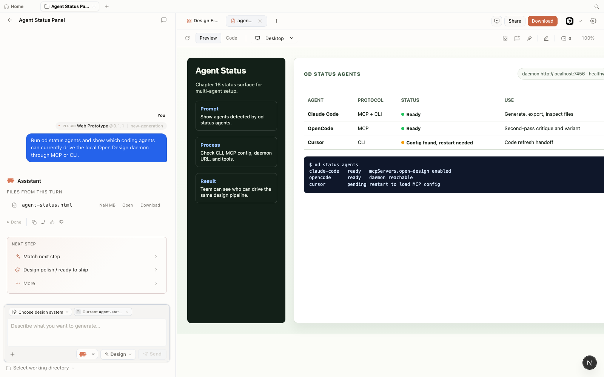
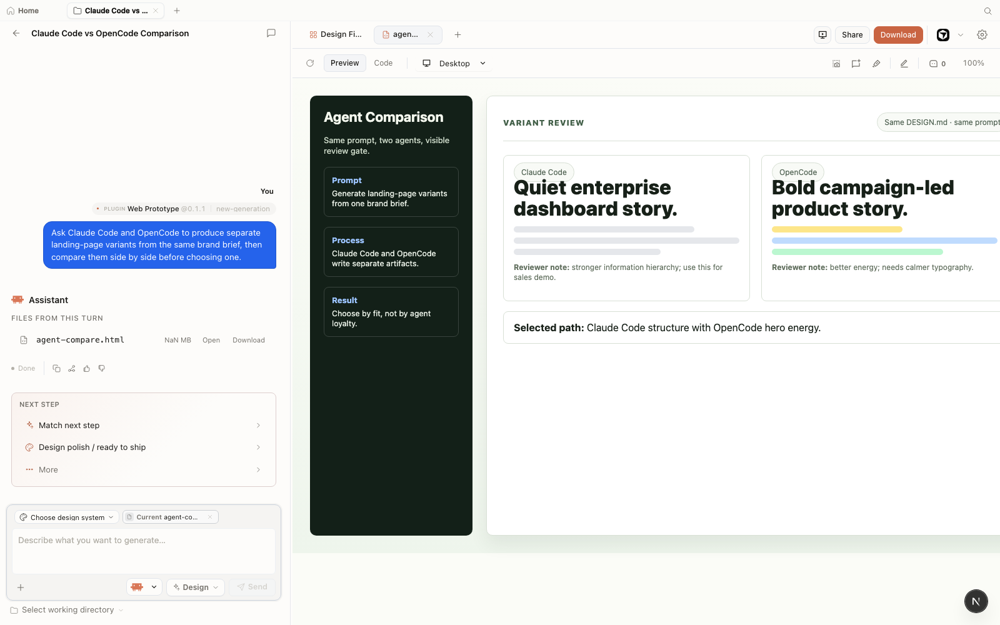

Chapter
16
Building Your Own Design Pipeline
Capstone: a repeatable agent-native design system for your team
A team-grade design pipeline is the brand contract plus skills plus two agents plus a review gate, assembled once and run forever. This chapter builds the pipeline spine from scratch: six phases, each producing a concrete output, each referencing the foundation laid in earlier chapters. By the end, you have a documented, reproducible system your team can run on any project.
Every chapter in this book has been building toward this assembly. The four-beat loop from Chapter 03 is the generation rhythm; skills from Chapter 04 and the brand contract from Chapter 05 are the quality layer; the two-agent strategy from Chapter 11 is the resilience layer; multi-agent teams from Chapter 12 are the variation layer; the export pipeline from Chapter 08 is the delivery layer. The pipeline spine stitches these layers into a sequence any team member can follow and reproduce.
The pipeline spine is not a tool. It is a documented decision. Undocumented agent workflows look fast at first---they are---but they become unrepeatable within weeks as model defaults shift, agent versions update, and the person who knew the prompt structure moves to another project. Writing the spine down is the one act that converts a personal workflow into a team asset.
Phase 1: The Brand Contract
The pipeline spine starts with a single file: your DESIGN.md. Everything else in the pipeline reads from it. If the file is vague, every agent output will be vague. Get this right first.
A DESIGN.md is a machine-readable brand contract. It encodes color palette, typography, spacing grid, component patterns, interaction rules, voice, and reserved constraints---all as plain text that every agent CLI can read. Open Design ships 150 bundled brand systems (as of June 2026, v0.9.0), but the only one that matters for your pipeline is the one you write for your own organization.
The schema has nine sections, each with a specific role. An agent needs all nine to produce consistent output; missing sections fall back to model defaults, which is exactly what you are trying to prevent.
Create DESIGN.md at the root of your Open Design project. Start with the nine-section skeleton:
# DESIGN.md: Acme Design System
## 1. Brand identity
- **Name:** Acme Inc.
- **Voice:** Clear, direct, no jargon. No exclamation marks.
- **Attitude:** Trustworthy and practical.
## 2. Color palette
- **Primary:** #0B5FFF (electric blue)
- **Surface:** #0A0A0A (near-black)
- **Text:** #FFFFFF (white)
- **Border:** #333333
## 3. Typography
- **Sans-serif:** Inter
- **Font scale:** 12px, 14px, 16px, 18px, 20px, 24px, 32px
- **Line height:** 1.5 for body, 1.2 for headings
## 4. Spacing grid
- **Base unit:** 8px
- **Scale:** 4px, 8px, 12px, 16px, 24px, 32px, 48px, 64px
## 5. Component patterns
- **Buttons:** 32px height, rounded 4px corners, medium weight
- **Cards:** 1px border, 8px padding, no drop shadows
- **Forms:** labels above inputs, error states in red
## 6. Imagery
- **Style:** minimalist, high-contrast, no decorative shadows
- **Sources:** Unsplash, Pexels (attribution required)
## 7. Layout principles
- **Max width:** 1200px
- **Responsive breakpoints:** 640px, 1024px, 1280px
## 8. Interactions
- **Hover states:** 10% opacity shift
- **Focus states:** 2px outline in primary color
- **Transitions:** 150ms ease-out for all state changes
## 9. Reserved rules
- No marketing superlatives
- Contrast ratio must be >= 4.5:1 on all textValidate the contract by generating one test artifact. Open Open Design, point it at your project, and run a minimal prompt:
Build a single-page error state using the house DESIGN.md.
Show a 404 message with a primary CTA button and the brand voice.If the output uses your primary color, your typeface, and the right voice, the contract is wired. If it defaults to blues and grays, the DESIGN.md is not being injected---check that the file is in the project root.
Lock the contract into version control before touching anything else.
$ git add DESIGN.md
$ git commit -m "feat: add Acme house DESIGN.md v1"Every pipeline phase reads from this commit. Treat the brand contract as infrastructure, not a draft document.
What Makes a Strong Brand Contract
The difference between a weak and a strong DESIGN.md is specificity at the constraint level. Vague rules produce vague output. "Use blues and grays" is not a brand contract; it is a suggestion. "Primary: #0B5FFF; background: #0A0A0A; text: #FFFFFF; no gradients; no drop shadows" is a constraint the agent can enforce on every artifact.
The voice section (Section 1) and the reserved rules section (Section 9) are the two most under-authored sections. Most teams fill in the colors and typography quickly, then leave voice as one sentence. A weak voice section means marketing copy that sounds like a different company from one artifact to the next. Spend at least as much time on voice and reserved rules as on colors---these are what make your artifacts feel like you, not like a generic AI output.
Open Design ships bundled DESIGN.md files for well-known companies---named by their published brand identities---for reference and learning. These files are for understanding the schema structure, not for shipping a product in another company's visual identity. Use them as structural examples only. Your pipeline must run on a DESIGN.md you authored for your own brand. Trademark law does not allow an agent-generated artifact to carry another organization's trademarked identity to market.
Phase 2: House Skills
The brand contract is the what; skills are the how. A skill constrains structure, output format, and artifact shape so the same prompt reliably produces consistent output across runs.
Open Design ships 100+ skills as of June 2026 (v0.9.0). Most teams need two to four house skills that are not in that catalog: the artifact shapes specific to their product. A SaaS company might need a feature-announcement skill. A consultancy might need a client-deck skill. These are the skills that encode your team's standards once and apply them on every run.
Identify the two or three artifact types your team produces most frequently. These become house skills.
For each, answer: what is the fixed structure? What are the variable inputs? What is the output format?
Create a skill file in .claude/skills/ (highest-priority discovery path, per the skills protocol). The skill file is plain text with a header block and constraint list:
# skill: saas-landing
description: Single-page SaaS landing with hero, features, CTA
constraints:
- hero section: headline + subheadline + primary CTA
- feature section: three cards, icon + title + body
- footer: privacy link, terms link, company name
- no secondary navigation in hero
- responsive: 640px breakpoint for mobile layout
output: single-page-html
brand: reads from DESIGN.md in project rootTest the skill by invoking it directly:
Use the saas-landing skill with the house DESIGN.md to build
a landing page for a team productivity tool.
Product name: Acme Workflow. Tagline: Ship faster together.Run this three times. If the output structure is consistent across runs but the copy varies, the skill is working. If the structure varies, tighten the constraints.
Most teams under-invest in house skills and then wonder why agent output is inconsistent. A good house skill encodes decisions your team has already made---layout structure, component hierarchy, responsive behavior---so the agent does not have to guess them from a prompt. The investment is 30 minutes of writing; the return is months of consistent output. I have seen teams with two well-written house skills outperform teams with access to all 100+ bundled skills and no constraints of their own.
Phase 3: Two Agents via MCP
The pipeline spine is agent-agnostic by design. Wire two agents: one proprietary for depth, one open-source for independence. The Model Context Protocol (MCP) is the connection layer---the same for every agent.
As of June 2026, Open Design supports 21 agent CLIs via MCP adapters (see the agent adapter catalog). The two-agent hedge is straightforward: Claude Code gives you Anthropic's reference implementation with full streaming and surgical edit capability; OpenCode gives you an MIT-licensed fallback that survives any vendor pricing or sunset event. The pipeline spine never requires a specific agent; it requires MCP connectivity.
Connect Claude Code as the primary agent:
$ od mcp install claude-codeConnect OpenCode as the secondary agent:
$ od mcp install opencodeVerify both agents are detected:
$ od status agentsYou should see both claude-code and opencode listed as active. If one is missing, check that its CLI is installed and the MCP config was written correctly. See Appendix A for per-agent config locations.

od status agents, and the preview shows Claude Code, OpenCode, and Cursor connection states against the same local daemon. Mock-safe screenshot from Open Design v0.11.0, captured June 2026.The two-agent strategy is the pipeline's insurance policy. You generate with Claude Code on a daily basis; if Anthropic changes pricing, access, or capabilities, you switch to OpenCode without touching the pipeline structure. The daemon routes to whichever agent you designate as primary; the MCP protocol is the same either way.
The selection of Claude Code and OpenCode as the two-agent pair is a recommendation, not a requirement. The principle is: one agent with deep context-window capability and surgical edit support, and one agent with an open-source license that is not tied to any single vendor's commercial roadmap. As of June 2026, that pairing is Claude Code (Anthropic, proprietary) and OpenCode (MIT, community-maintained). If the agent market shifts---and as documented in section 11.4, it will---you substitute at the MCP layer without touching the pipeline spine.
| Role | Agent | Why this choice | Fallback if unavailable |
|---|---|---|---|
| Primary (proprietary) | Claude Code | Anthropic reference implementation; streaming edits; large context window; full surgical edit capability | Any MCP-connected proprietary agent with streaming support |
| Secondary (open-source) | OpenCode | MIT license; community-maintained; no single vendor dependency; survives commercial pivots | Cline, Aider, or any MIT/Apache-licensed MCP-connected agent |
If your pipeline hardcodes a single agent in every step, you have rebuilt the vendor dependency you installed Open Design to escape. Keep the spine agent-agnostic. Specify the agent per-session or per-project in the daemon config, not in the DESIGN.md or skill files. The pipeline should run with any MCP-connected agent with no structural changes required.
Phase 4: Variation Workflow
A multi-agent variation step is where the two-agent wiring pays off creatively. Run the same prompt through both agents, compare outputs, and pick or blend the best parts. This is not an automated merge---it is a deliberate human decision backed by two independent agent interpretations.
The variation workflow is especially valuable for hero sections, landing page layouts, and deck visuals---any artifact where there is genuine design space to explore. Single-agent generation produces one interpretation; two agents produce a genuine choice.
Author the variation prompt. Keep it identical for both agents---the point is to see how each interprets the same brief, not to bias one toward a specific solution:
# Variation run: Three hero layout options
## Setup
- DESIGN.md: Acme brand contract
- Active agents: claude-code, opencode
- Skill: saas-landing
## Prompt (identical to both agents):
Build a SaaS landing page using the Acme DESIGN.md.
Hero: headline, subheadline, primary CTA.
Three feature cards below the fold.
Brand colors from DESIGN.md. No stock images.Run the prompt through Claude Code first and save the output artifact:
$ # In Open Design UI: select claude-code, run the prompt
$ # Artifact saved as artifact-claude-code-001.htmlRun the same prompt through OpenCode and save the second artifact:
$ # In Open Design UI: switch to opencode, run same prompt
$ # Artifact saved as artifact-opencode-001.htmlPreview both artifacts side by side in Open Design. Compare:
- Layout spacing and alignment interpretation
- Typography hierarchy choices
- Component styling---buttons, cards
- Hero section structure and visual hierarchy
Pick one as the base, or ask an agent to blend the best parts of both into a third artifact.

Brand contract, phase 1
Artifact constraints, phase 2
MCP-connected, phase 3
Multi-agent compare, phase 4
Codebase alignment, phase 5
Gate and archive, phase 6
Phase 5: Code-Refresh Integration
The code-refresh plugin closes the loop between the artifacts you generate and the codebase you ship. Instead of manually porting design tokens from an artifact into your production code, the plugin reads your DESIGN.md and proposes a diff that aligns component tokens in your codebase to the brand contract.
As of June 2026, the code-refresh plugin is listed as alpha in the Open Design roadmap (v0.9.0). The plugin is the most powerful and the most volatile phase of the pipeline---it has the highest staleness risk as the API is not yet finalized.
Confirm the code-refresh plugin is available in your Open Design install:
$ od plugin list | grep code-refreshIf it appears, proceed. If not, check the roadmap---as of June 2026 it is in alpha and may require a manual install from the plugins registry.
Run a dry-run pass against your codebase to preview the proposed token changes:
$ od plugin code-refresh \
--repo-path /path/to/acme-website \
--design-path ./DESIGN.md \
--scope src/components \
--dry-runThe dry-run outputs a diff preview. Review every proposed change against the brand contract. A well-authored DESIGN.md produces a clean diff; a vague one produces false positives.
If the diff looks correct, apply it with a commit message that traces back to the DESIGN.md version:
$ od plugin code-refresh \
--repo-path /path/to/acme-website \
--design-path ./DESIGN.md \
--scope src/components \
--commit-message "refactor: align tokens to Acme DESIGN.md v1"Do: run code-refresh after a DESIGN.md update
# DESIGN.md updated: new primary color
# Run dry-run first
$ od plugin code-refresh \
--design-path ./DESIGN.md \
--scope src/components \
--dry-run
# Review diff, then apply
$ od plugin code-refresh \
--design-path ./DESIGN.md \
--scope src/componentsDon't: run code-refresh without reviewing the diff
# Running without --dry-run first
# skips the review step and applies all
# proposed token changes immediately.
# A vague DESIGN.md can introduce regressions.
$ od plugin code-refresh \
--design-path ./DESIGN.md \
--scope src/The code-refresh plugin is alpha as of June 2026 (v0.9.0). The CLI flags shown above are based on the architecture documentation and roadmap; they may change before the plugin reaches stable. Always run with --dry-run first regardless of maturity. The plugin modifies source files in your codebase---treat every run as a potentially breaking change and ensure you have a clean git state before applying.
Phase 6: Export and Review Gate
The export and review gate is the human decision point. No artifact leaves the pipeline without a person verifying it against the brand contract. The export step produces the canonical files; the review gate is your quality assertion.
Open Design's export pipeline produces HTML (inlined), PDF, PPTX, ZIP, Markdown, and MP4 from a single artifact (as of June 2026, covered in depth in section 08.3). The pipeline spine codifies which formats are canonical for which artifact types, so the review checklist is consistent across runs.
Export all required formats in one command. Specify the artifact ID and your target formats:
$ od export \
--artifact-id hero-landing-v3 \
--formats html,pdf,pptx \
--output ./exports/hero-landing-v3Open each exported file independently---not just the preview. The sandboxed preview and the inlined HTML export handle external assets differently. A font that loads in the preview may be missing in the inlined HTML. Verify each format in its target environment:
- HTML: open in a browser with network disconnected
- PDF: open in a PDF viewer, check pagination and typography
- PPTX: open in your presentation tool, check slide layouts
Run the brand contract review against the exported artifact. Use the review checklist from Phase 7 of this chapter as your criteria. If the artifact passes, mark it approved:
$ od approve \
--artifact-id hero-landing-v3 \
--reviewer @yourname
# Marks artifact as approved in the project recordArchive the approved exports. The archive is your canonical output for this pipeline run:
$ tar -czf hero-landing-v3-approved.tar.gz ./exports/hero-landing-v3
# Copy to your team's shared storage
The Finished Pipeline
The pipeline spine is now assembled. Six phases, six outputs, two agents, one brand contract. Before you hand it to your team, document it and stress-test it with a full run.
The pipeline is worth documenting even for a team of one. The act of writing the spine down is what makes the output reproducible. Undocumented agent workflows become unrepeatable within weeks as model defaults drift, agent versions update, and the person who remembers the prompt structure leaves.
Full Pipeline Run
Run the entire pipeline end to end once before handing it to your team. Use this compound prompt to kick off a full pass:
Using DESIGN.md and the house deck skill, generate a launch deck;
variations agent: three hero options using both claude-code and
opencode; then run code-refresh on src/ui to the same tokens
and export the deck to PPTX and PDF.The pipeline spine handles the orchestration. You review the variations at phase 4, approve the exports at phase 6.
The pipeline is worth documenting even for a team of one. I have seen undocumented agent workflows become unrepeatable within weeks as defaults drift---a model version updates, a skill gets modified, someone adjusts the DESIGN.md without a commit message, and suddenly the output looks nothing like last month. Six phases on a single page in your repo's docs/pipeline.md costs an hour and pays back every time a new person joins or a previous run needs to be reproduced. Don't over-engineer it: six phases is plenty, and more steps usually mean more places for drift to enter.
Pipeline Phases Summary
| Phase | Output | Tool | Source chapter |
|---|---|---|---|
| 1 — Brand Contract | DESIGN.md committed to version control |
Text editor, Open Design project | Section 05.5 |
| 2 — House Skills | Skill files in .claude/skills/ |
Skill authoring, Open Design | Section 04.5 |
| 3 — Two Agents | Both agents MCP-connected, od status agents clean |
od mcp install |
Section 10.2 |
| 4 — Variations | Two artifact variants from two agents, one selected | Open Design multi-agent run | Section 12.3 |
| 5 — Code-Refresh | Codebase diff applied and committed | od plugin code-refresh (alpha) |
Section 09.4 |
| 6 — Export + Review | Approved exports archived in canonical formats | od export, manual review |
Section 08.3 |
Pipeline Reuse Checklist
| Step | Done when | Owner |
|---|---|---|
| DESIGN.md authored and committed | Test artifact uses house colors, typeface, and voice without prompting | Design lead |
| House skills tested across 3+ prompts | Output structure is consistent; copy varies but layout does not | Design engineer |
| Both agents connected and verified | od status agents shows both active |
Platform / infra |
| Variation workflow documented | A second team member can run the variation prompt independently | Design lead |
| Code-refresh dry-run reviewed | Diff is accurate; no false positives on a clean branch | Design engineer |
| Export formats verified and archived | Each format opens correctly in its target environment; artifact approved | Design lead |
Pipeline Troubleshooting
| Symptom | Phase | Cause | Fix |
|---|---|---|---|
| Artifacts ignore DESIGN.md colors and typography | 1 | DESIGN.md not in the project root, or file not committed |
Verify file location with od status; commit to version control before generating |
| Skill output structure varies across runs | 2 | Skill constraints are too vague; model interprets layout differently each time | Tighten layout constraints in the skill file; add explicit rules for each section |
od status agents shows one agent missing |
3 | Agent CLI not installed or MCP config not written | Run od mcp install <agent> again; check Appendix A for the config file location |
| Both variation outputs look identical | 4 | Agents sharing the same base model through a proxy; prompt too constrained | Verify agents are distinct; loosen the variation prompt to give each agent genuine design space |
| Code-refresh proposes unrelated changes | 5 | DESIGN.md is too broad; --scope path is too wide |
Narrow --scope to a specific component directory; tighten reserved rules in DESIGN.md Section 9 |
| Exported HTML missing fonts or images | 6 | Preview loads external assets that the inlined export cannot reach | Use inline or bundled assets only; verify export offline before approving (see section 08.6) |
Agent-Independence Note
The pipeline spine is intentionally agent-agnostic. As documented in section 11.3, the agent market churns: Gemini CLI sunsets June 18, 2026; OpenCode has been renamed once; Codex CLI ships near-weekly releases. The spine should never have an agent name hardcoded into it. Agents are wired at the MCP layer; the pipeline documentation refers to "primary agent" and "secondary agent," not "Claude Code" or "OpenCode." When a better agent arrives, you swap the connection without rewriting the spine.
Next: The appendices provide the reference material that supports every phase of this pipeline. Appendix A is a scannable command and CLI reference---keep it open during setup and handoff. Appendix B indexes the bundled skills, brand systems, and plugins catalog. Appendix C covers the failure modes you will actually hit, with a symptom-cause-fix table for each. The pipeline spine is assembled; the appendices are its maintenance manual.